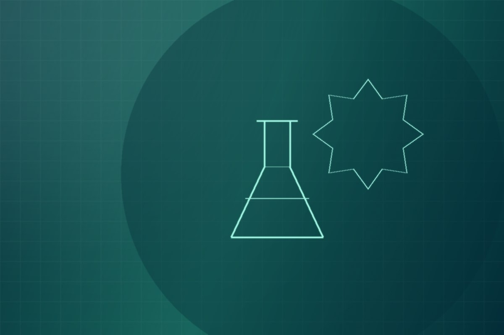
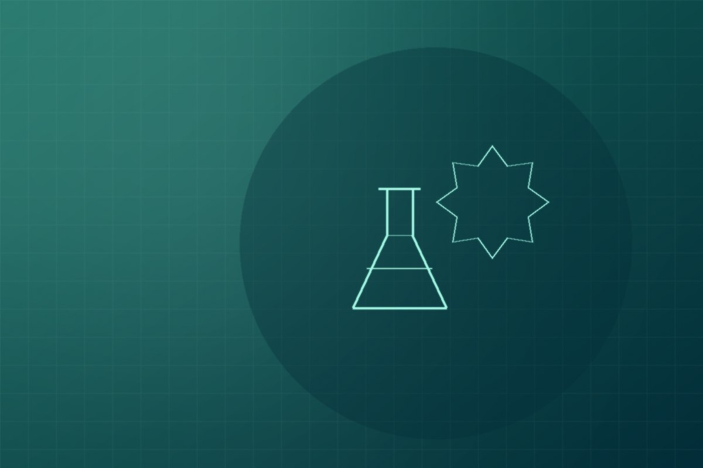

Learn more about VeriMat Materials Testing Laboratory and our commitment to reliable materials testing.
VeriMat Materials Testing Laboratory is a fictional civil engineering-related laboratory that provides testing services for construction materials such as soil, concrete, and aggregates. The laboratory supports contractors, civil engineers, developers, construction companies, project owners, and other construction professionals involved in construction projects.

“To provide reliable and accurate materials testing services that help construction professionals make informed decisions about the quality of construction materials.”
“To become a trusted materials testing laboratory known for reliable service, professional testing, and quality results.”

VeriMat focuses on soil, concrete, aggregate, and selected construction material testing. The laboratory's purpose is to support construction quality control and project requirements through organized materials testing services and information.
View Our Services